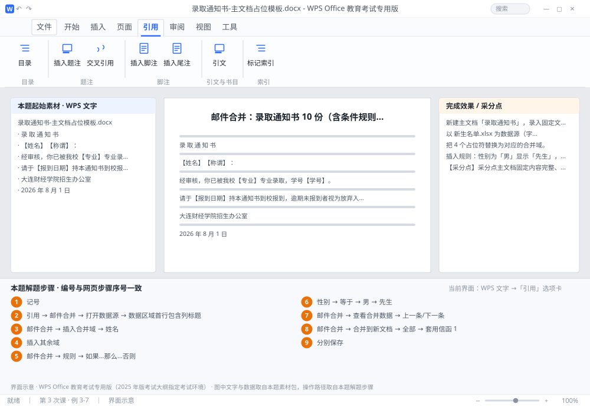

完成比对文档 · 例 3-7
邮件合并：录取通知书 10 份（含条件规则「先生/女士」） ｜ 第 3 次课 / WPS 文字 ｜ 网页：实操-文字3.html ｜ 考试环境：WPS Office 教育考试专用版（2025 年版考试大纲指定考试环境）
用途 本页按修订后的题目要求与解题步骤生成，是交卷自查的结果基准：
逐项列出每一步应出现的可复核结果，配合模拟操作截图与解题结果文件使用。
它不是素材包的一部分，不会预置答案动作；起始素材仍从本题素材包下载。
一、本题起始素材包
目录：练习素材/练习3-7-邮件合并/ ｜
下载包：练习素材/下载/练习3-7-邮件合并.zip
录取通知书-主文档占位模板.docx新生名单.xlsx素材说明.txt
二、题目要求
- 新建主文档「录取通知书」，录入固定文字，姓名/专业/学号/报到日期处保留占位符（如【姓名】）。
- 以 新生名单.xlsx 为数据源（字段：姓名、性别、专业、学号、报到日期）。
- 把 4 个占位符替换为对应的合并域。
- 插入规则：性别为「男」显示「先生」，否则显示「女士」。
- 预览合并数据，确认 10 条记录均正确。
- 合并到新文档，生成 10 份通知书。
- 保存主文档 通知书主文档.docx 与合并结果 通知书-合并结果.docx。
三、解题步骤（编号与下方核对表、截图编号一致）
- 新建主文档。Ctrl+N，录入固定文字与 4 个占位符（占位符只是「记号」，合并前必须删掉）。
- 打开数据源。「引用」→「邮件合并」→「打开数据源」→ 选 新生名单.xlsx → 在弹窗里选对应工作表 → 确认勾选「数据区域首行包含列标题」→ 确定。
- 插入姓名域。选中并删除【姓名】→「邮件合并」→「插入合并域」→ 选「姓名」。
- 插入其余域。用同样方法把【学号】【报到日期】替换为对应合并域；日期若显示为 2026-09-01 00:00:00，可在数据源或域代码里设格式。
- 处理称谓。删除【称谓】→ 把光标留在原处 →「邮件合并」→「规则」→「如果…那么…否则」。
- 设规则参数。域名选「性别」→ 比较条件「等于」→ 比较对象输入「男」→ 则插入「先生」→ 否则插入「女士」→ 确定。
- 预览。「邮件合并」→「查看合并数据」→ 用「上一条/下一条」箭头翻记录，检查每条通知书的姓名、性别称呼、专业、学号、日期。
- 合并。「邮件合并」→「合并到新文档」→ 合并记录选「全部」→ 确定。WPS 会生成「套用信函 1」，共 10 页（每条一页）。
- 分别保存。主文档保存为 通知书主文档.docx；合并结果另存为 通知书-合并结果.docx。
四、完成效果 / 采分点
采分点主文档固定内容完整、占位符已全部替换为合并域 · 数据源为指定 xlsx 且首行为字段名 · 4 个合并域（姓名/专业/学号/报到日期）正确 · 规则实现「男→先生、女→女士」 · 合并结果为 10 份且内容逐条正确 · 两个文件均已保存
五、逐项完成核对表
| 步骤 | 关键操作路径 | 应出现的结果（可复核） |
|---|
| 1 | 新建主文档 | 「记号」 |
| 2 | 打开数据源 | 「引用」、「邮件合并」、「打开数据源」、新生名单.xlsx、「数据区域首行包含列标题」 |
| 3 | 插入姓名域 | 「邮件合并」、「插入合并域」、「姓名」 |
| 4 | 插入其余域 | 插入其余域 |
| 5 | 处理称谓 | 「邮件合并」、「规则」、「如果…那么…否则」 |
| 6 | 设规则参数 | 「性别」、「等于」、「男」、「先生」、「女士」 |
| 7 | 预览 | 「邮件合并」、「查看合并数据」、「上一条/下一条」 |
| 8 | 合并 | 「邮件合并」、「合并到新文档」、「全部」、「套用信函 1」、10 页 |
| 9 | 分别保存 | 通知书主文档.docx、通知书-合并结果.docx |
六、模拟操作截图

界面示意 · WPS Office 教育考试专用版 · 橙色编号与本题解题步骤序号一致；
图中文字与数据取自本题素材包，功能入口取自本题解题步骤。
核对方法：按网页解题步骤完成并另存自己的成稿后，逐行比对本表第 3 列的
参数、公式、区域、文件名与对象数量；再对照网页「完成效果 / 采分点」检查版式是否一致。